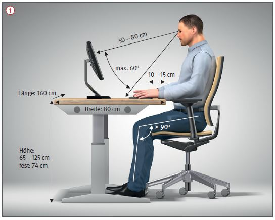
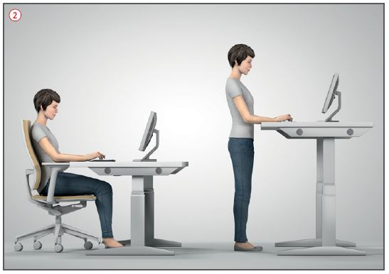

Gefährdungen
- Langandauerndes Sitzen und Bewegungsmangel gehen oft mit Schmerzen durch Muskelverspannungen im Bereich der Halswirbelsäule, des Schulter-Arm-Systems sowie der Lendenwirbelsäule einher und erhöhen das Risiko für Übergewicht, Herz-Kreislauf-Erkrankungen und Diabetes.
- Besondere Anforderungen an das Sehvermögen führen häufig zu Dauerbelastung der Augen.
Allgemeines
- Ergonomisch gestaltete Bildschirmarbeitsplätze und die richtige Nutzung reduzieren die Gefährdung.
Schutzmaßnahmen
- Die freie Bewegungsfläche am Arbeitsplatz beträgt mind. 1,5 m2.
- Tischfläche ist mind. 160 cm lang und 80 cm breit.
- Tischhöhe ist höhenverstellbar
zwischen 65 und 125 cm, ansonsten beträgt die Tischhöhe mind. 74 ± 2 cm
 .
.
- Bewegungsfreiheit der Beine
unter dem Tisch nicht durch
Gegenstände einschränken.
- Nichtglänzende Tischoberflächen werden empfohlen, um Reflexionen zu vermeiden. Helle Farbtöne
sind dunklen vorzuziehen.

- Drehstuhl mit gebremsten Rollen, höhenverstellbarer, gefederter und gepolsterter Sitzfläche sowie eine in Höhe und Neigung verstellbare Rückenlehne.
- Die Anordnung mehrerer Monitore ist von der Arbeitsaufgabe abhängig, mit Monitorarmen können die Bildschirme einfach angepasst werden.
- Sehabstand zum Bildschirm richtet sich nach der Sehaufgabe, mind. 50 cm (regelmäßige Anpassung der Bildschirmbrille).
- Bildschirmhöhe so niedrig wie möglich halten, oberste Zeile maximal auf Augenhöhe.
- Blickrichtung ist parallel zum Fenster.
- Raumtemperatur liegt zwischen 20 und 22 °C.
- Keine Zugluft, Luftgeschwindigkeit beträgt max. 0,15 m/s.
- Relative Luftfeuchte ist max. 50 %.
- Drucker in einen separaten Raum auslagern (der Lärmpegel im Raum sollte 55 dB(A) nicht überschreiten).
- Beleuchtung beträgt mind. 500 lx, besser 750 lx, da der Lichtbedarf älterer Beschäftigter steigt. Lichtfarben sind neutralweiß oder warmweiß.
- Ergonomische Eingabemittel:
- helle, flache Tastatur, die Auflagefläche für die Hände beträgt vor der Tastatur 10 bis 15 cm,
- Verwendung einer an die Handgröße und Händigkeit angepasste Maus, Platzierung der Maus neben der Tastatur.
Zusätzliche Hinweise gegen Bewegungsmangel
- Regelmäßiger Wechsel zwischen Sitzen (50 %), Stehen (25 %) und Laufen (25 %)
 .
.
- Aktive Bewegung, z.B. durch Bewegungspausen und Sport.
- Treppensteigen statt Aufzugfahren.
- Sitzpositionen wechseln, auch "fläzen" ist zwischendurch ausdrücklich erlaubt.
- Kolleginnen oder Kollegen in den umliegenden Büros besuchen, anstatt diesen E-Mails zu schreiben oder zu telefonieren.
- Tätigkeiten wie z.B. Telefonieren und Post sortieren im Stehen erledigen.
- Verwendung von Aktivierungshilfsmitteln, z.B. Fußroller, Wackelbrett, Knautschball, Faszienrolle.
- Mittagspause für einen kurzen (Verdauungs-)Spaziergang nutzen.
Arbeitsmedizinische Vorsorge
- Arbeitsmedizinische Vorsorge
nach Ergebnis der Gefährdungsbeurteilung
veranlassen (Pflichtvorsorge)
oder anbieten (Angebotsvorsorge).
Hierzu Beratung
durch den Betriebsarzt.
07/2021